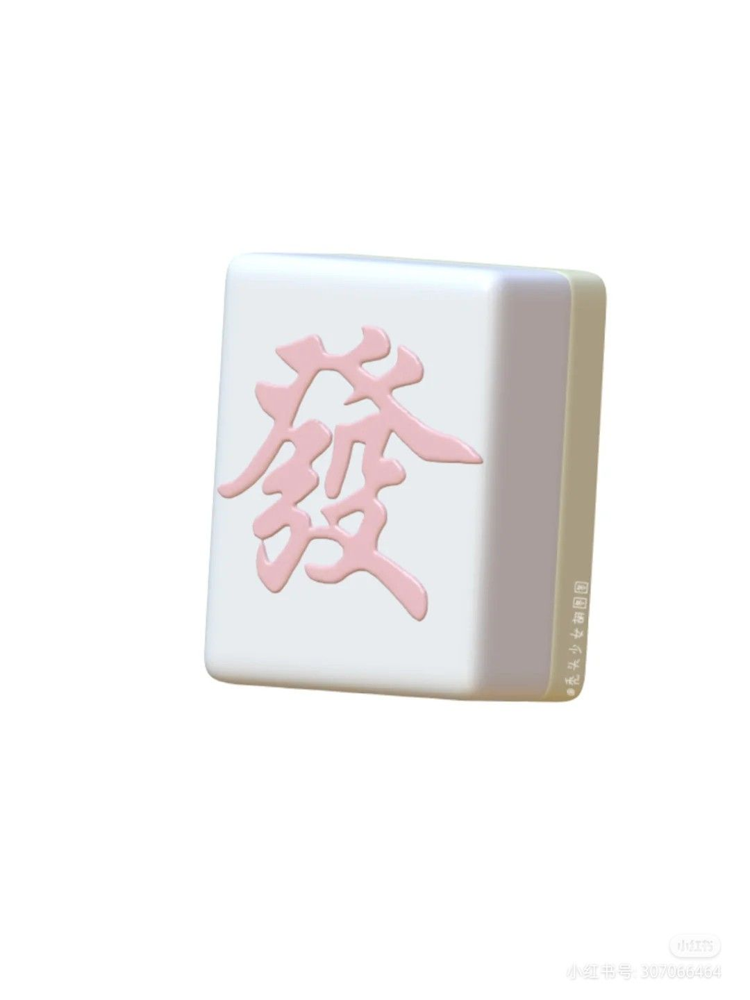
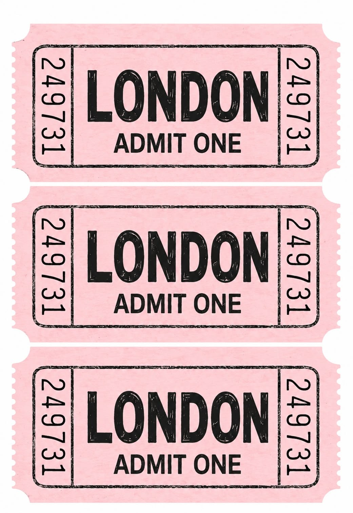
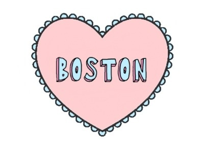
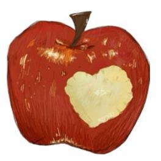
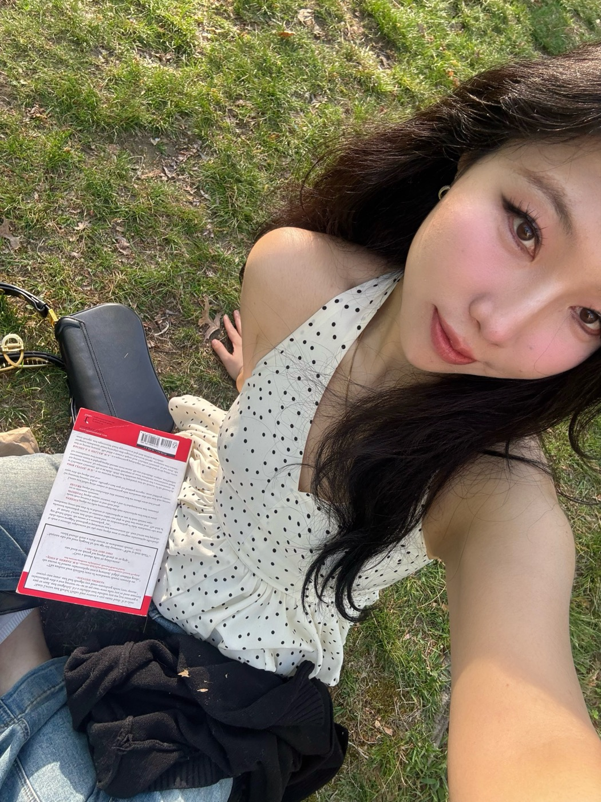
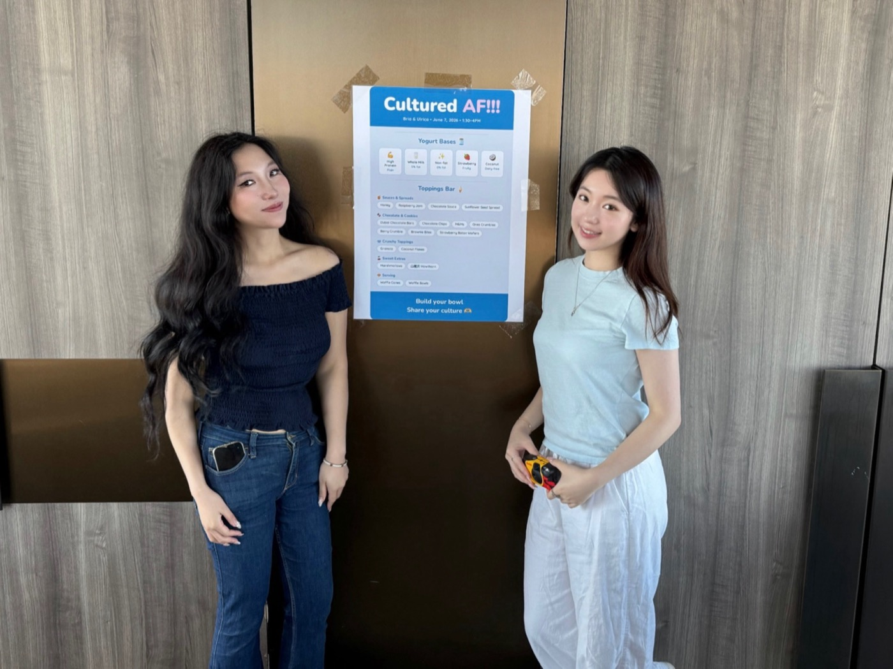
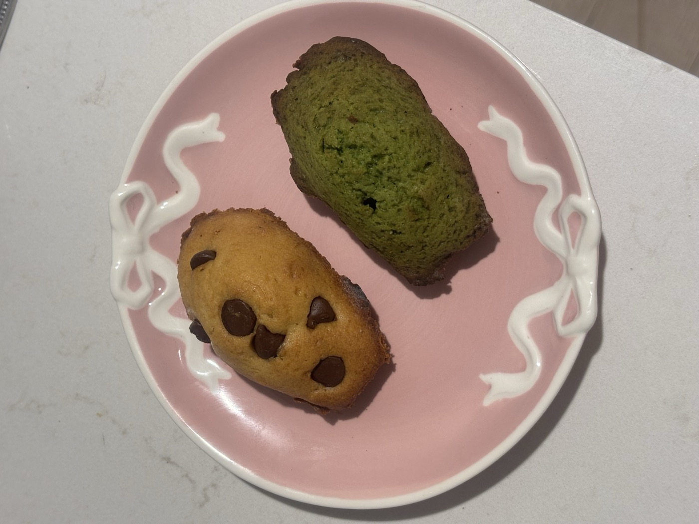
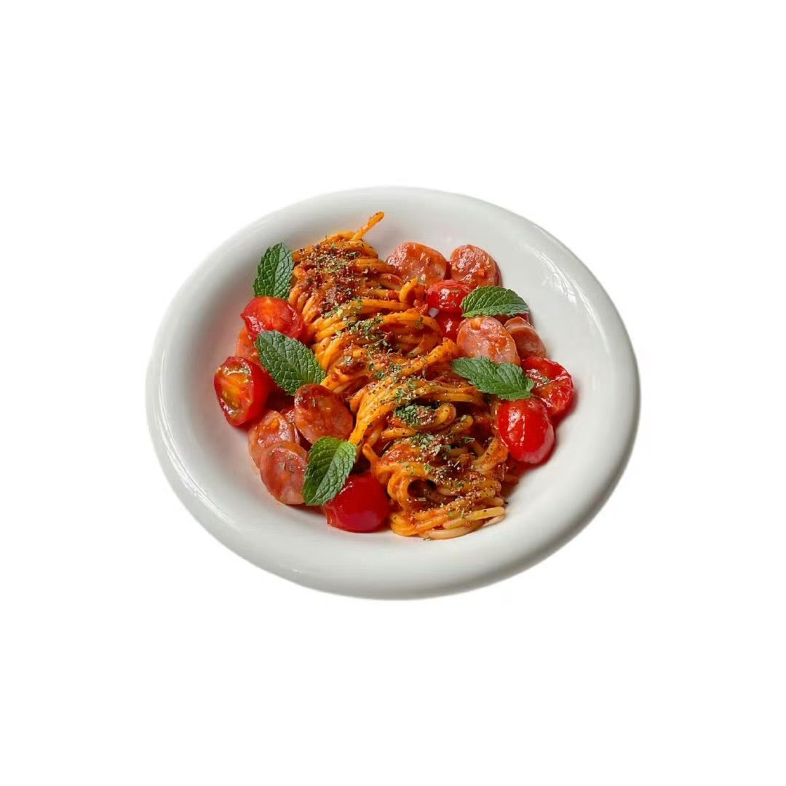

Hi, my name is Bria.
pronounced BREE-ah, born in China, raised across a few more places



GROWTH<MARKETER<<BASED<IN<NEW<YORK<NY<<<<<<<<<<




also known as the mysterious gorg girl in tech, if you found me on X. welcome to my little corner of the internet 👋
i built this because i wanted a space that actually felt like me: not a LinkedIn profile, not a resume with a nice font, not curated for the algorithm. just me, figuring things out in public. fair warning: it's still evolving. it might turn into part portfolio, part travel diary, part creative dumping ground, and part love letter to the things and people i care about. i contain multitudes.
long story short: i was born in China, educated between the UK and the US, took an adventurous gap year to research international relations and political economy, then founded an education company during my time at Harvard, and somehow ended up deep in tech startups in New York City. life is weird and i love it.
since then, i've spent my time working on every external-facing side of a company: for the past four years i've been a growth marketer in the tech startup world, building communities, creator programs, and partnerships from scratch at AI and crypto startups, usually as the first or main person in the room tasked with figuring it out. i've grown global communities, run tech and social events from NYC to Asia, and generated millions of social engagements along the way. i thrive in no-playbook, early-stage environments: good at making something out of nothing, and just as good at doing it as part of a team.
looking back, whether it was policy studies, education research, or building in tech, one thing has strung it all together: a deep curiosity for things that are tangible and impactful. i'm always learning, and i'll dive deep into any area where i see i can meaningfully contribute. that same curiosity shows up outside of work too.
i love traveling, and i've been lucky enough to eat my way through 🇯🇵🇰🇷🇩🇪🇦🇹🇧🇪🇫🇷🇨🇿🇵🇹🇨🇭🇻🇳🇲🇲🇸🇬🇲🇨🇹🇭🇳🇱🇪🇸🇮🇹🇹🇼🇭🇰, and i have very strong opinions about where to eat in most of them. (i'll probably end up writing about this.) i also grew up painting and have never really stopped making things, the medium just keeps changing. lately that's meant baking: if you've ever tried my madeleines or my salt bread, you already know.
one thread runs deeper than the rest, though: education is something i care about deeply and personally. growing up in a less developed part of China and making it to Harvard taught me early how much access and support actually matter. living in New York now, i feel that even more: i'm deeply aware of how much support i got along the way from my family, mentors, and the people around me, so giving back is something i actively try to do. i've spent years tutoring rural kids in China, researching education policy, and co-authored a chapter in a UNESCO-affiliated book on reimagining the futures of education. my first venture was an education startup. the thread has never really gone away.
outside of all that, i'm an ISFP, and a lot of people are surprised i'm an introvert: i'm usually the one organizing the dinner, connecting the people, hosting the thing, sometimes for a room of 200. but i promise both things are true. i recharge in quiet, and some of my happiest moments are spent making something just for me: a design, a batch of madeleines at midnight, a reel, this website. i built it myself using AI as my first real vibe-coding project, and i'm already obsessed with what else i can make this way.
i started posting online in 2021, lifestyle and education content on RedNote, then X as i got deeper into tech. i've been quieter than i'd like lately, and this space is me pushing myself back into creative expression. i'm also on Instagram now, posting random reels. follow along if you'd like.
if something here resonates (a collaboration idea, a book recommendation, a restaurant i should try in your city, an event collab idea, or even a new job opportunity) please reach out. my DMs are open. thanks for reading through my thoughts :)
with love,
bria 🌱